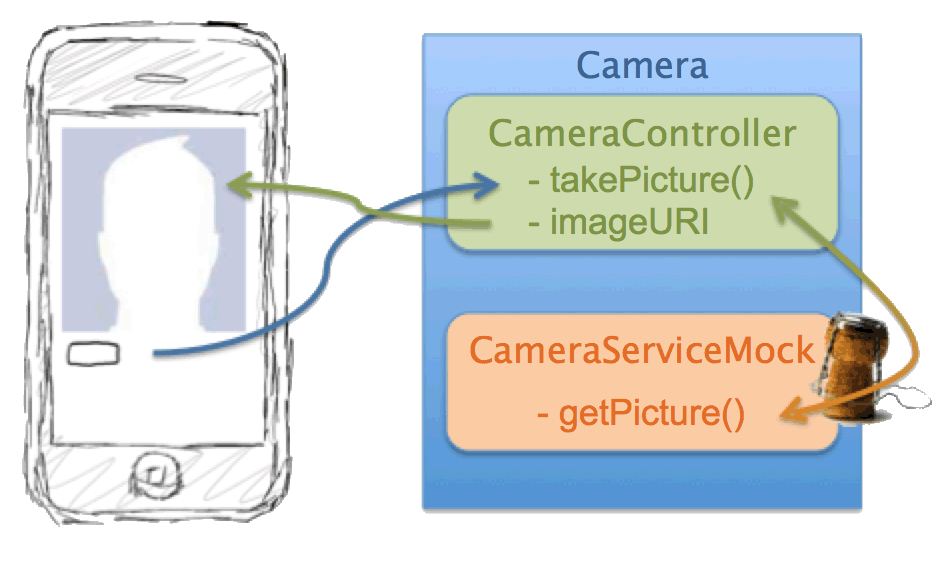

Développement d'une appli mobile sous
Cordova
en TDD
Toulouse - 3 décembre 2015
Valbonne - 9 et 10 décembre 2015
Paray - 15 décembre 2015
Au programme
- Quelques frameworks multi-plateformes
de développement mobile - Le TDD en 1 slide
- Que va-t-on développer aujourd'hui ?
- … et maintenant on code !
Quelques frameworks multi-plateformes
de développement mobile
Cibler des mobiles variées…
…… en faisant un seul développement
- Une seule technologie
- Limiter le coût des développements
- Look & Feel natif
Les frameworks les plus populaires
Xamarin
- Ecosystème complet de développement basé sur .Net
Xamarin Platform, Xamarin Test Cloud, Xamarin.Forms, Xamarin Insight… - Ressources spécifiques via API natives en C#
- 1 000 000+ utilisateurs dans 120 pays
Plus : performances Moins : coût des licences
Les frameworks les plus populaires
Apache Cordova
- Version Open Source d'Abode PhoneGap
HTML - CSS - JavaScript - Plugins pour accéder aux ressources du mobile
- Compilation d'application hybride par plateforme
Plus : Open Source
Les frameworks les plus populaires
Ionic
- Cordova + AngularJS
- Composants d'interface complexes :
<directive> - Communauté très active !
Le TDD en 1 slide
TDD = Test Driven Development

Un test = Une spécification fonctionnelle
Que va-t-on développer aujourd'hui ?
Réaliser avec Ionic et en TDD
l'application indispensable
pour se prendre en Selfie !
Pourquoi ça a un intérêt ?
- Utiliser la puissance d'AngularJS
- Mocker les ressouces du mobile pour développer en local
Concrètement
- Tests = Spécifications : Jasmine + Karma
- Composants à la JohnPapa : Angular Style Guide
Que va-t-on développer aujourd'hui ?
Que va-t-on développer aujourd'hui ?
Que va-t-on développer aujourd'hui ?

Que va-t-on développer aujourd'hui ?
On prépare le terrain…
prérequis : Node.js
- Installation de Ionic
-
Installation de l'environnement de test
jasmine, karma -
Installation des outils de mock
angular-mocks
On prépare le terrain…
Création du projet
ionic start selfie blank
cd selfie
Plateformes cibles et plugins
ionic platform add android
ionic plugin add cordova-plugin-camera
Configuration de Karma
karma init karma.conf.js
Lancement en local et sur le device
ionic serve
ionic run android
… et maintenant on code !
Questions ?
Annexe : préparation du projet
prérequis : Node.js
Installation de Ionic
npm install -g cordova ionic
npm install -g karma-cli phantomjs
Installation de l'environnement de test
npm install karma -–save-dev
npm install karma-jasmine karma-chrome-launcher -–save-dev
Installation des outils de mock
npm install angular-mocks --save-dev